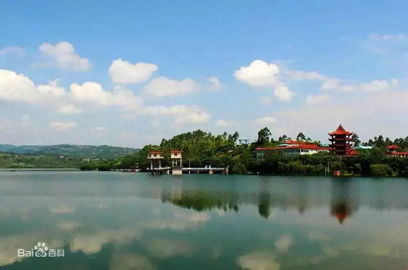
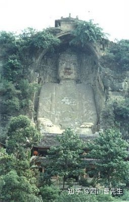

自贡市荣县

荣县，隶属四川省自贡市。地处四川盆地南部，位于北纬29°08′04″～29°38′26″,东经104°03′03″～104°40′15″
。东邻威远、贡井，南界宜宾，西连井研、犍为，北接仁寿。地处长江上游、沱江、岷江水系之间的
低山丘陵区，地势西北高，东南低。有煤、陶土、页岩气、岩盐等矿产，工业以机械、建材、盐化工、食品、能源为主。
农业基础扎实，是全国首批国家农业可持续发展试验示范区、全国农产品加工示范基地县，荣获首批国家农
业绿色发展先行区、全省粮食生产“丰收杯”、中国花茶之乡、全省茶业十强县等荣誉，连续三年获评全省农民增收工作先
进县，入围中国西部地区县域经济百强县。

说到荣县，不得不说说它特殊的一个身份——辛亥革命第一个宣布独立的县城。
1911年9月，吴玉章与同乡龙鸣剑、王天杰共同举事发动起义，于9月25日宣布荣县独立，
建立荣县军政府，行使军、政、财、文大权，开辛亥革命起义之先河。军政府就设在县署衙
，现在的荣县人民政府办公大楼后边。吴玉章等革命者就在这里处理军政事务。2019年10月
7日，荣县军政府旧址入选第八批全国重点文物保护单位名单。
到了荣县第一个要看的肯定是荣县大佛。荣县大佛位于县城东郊，为唐代所刻，
佛像坐南面北，是一尊释迦牟尼摩崖石刻造像，佛身通高36．67米，头长8.76米，肩宽12.
67米，膝高12米，脚宽3.5米，是世界第一大释迦牟尼佛（现世佛）。大佛的头顶上方有一道
石条卷拱护罩，上刻“大开觉路”四字，至今保存完好。大佛开凿于北宋元丰八年（公元1085年
），完工于公元1092年，历时八年。大佛以其隽美而享誉神州，素有“乐山大佛雄，荣县大佛美
”之民间赞誉，是古代艺术家和劳动人民匠心独运的上乘之作，是中国石刻遗存之艺术瑰宝，19
56年被四川省人民政府批准为省级文物保护单位。
到了荣县第一个要看的肯定是荣县大佛。荣县大佛位于县城东郊，
为唐代所刻，佛像坐南面北，是一尊释迦牟尼摩崖石刻造像，佛身通高36．67米，
头长8.76米，肩宽12.67米，膝高12米，脚宽3.5米，是世界第一大释迦牟尼佛（
现世佛）。大佛的头顶上方有一道石条卷拱护罩，上刻“大开觉路”四字，至今保存
完好。大佛开凿于北宋元丰八年（公元1085年），完工于公元1092年，历时八年。
大佛以其隽美而享誉神州，素有“乐山大佛雄，荣县大佛美”之民间赞誉，是古代艺
术家和劳动人民匠心独运的上乘之作，是中国石刻遗存之艺术瑰宝，1956年被四川
省人民政府批准为省级文物保护单位。
在距大佛寺不远的地方，二佛寺沿崖而立，造像上千尊，唐宋时期名“浮图崖”，
亦称千佛崖。因其众多佛像装金饰彩，阳光照射，金碧辉煌，故又称“金碧崖”。佛像为唐代开
凿的弥勒坐佛，佛高5.8米，宽2.6米。左右龛壁上，刻有28小龛120尊造佛。大佛与二佛遥
相呼应，保佑着荣县人民风调雨顺，富足安康！
自贡是恐龙之乡，而荣县金花桫椤谷就是为素食恐龙提供食物
的地方。桫椤谷位于荣县城西南48公里处的金花桫椤谷旅游景区，占地面积
10平方公里，景区内有省级桫椤自然保护区，
植被保存完好的万亩森林、千亩红岩湖、千亩优质梨基地及桫椤、钟乳石、
瀑布等景观。是周末一家人旅游休闲、洗肺的好地方。